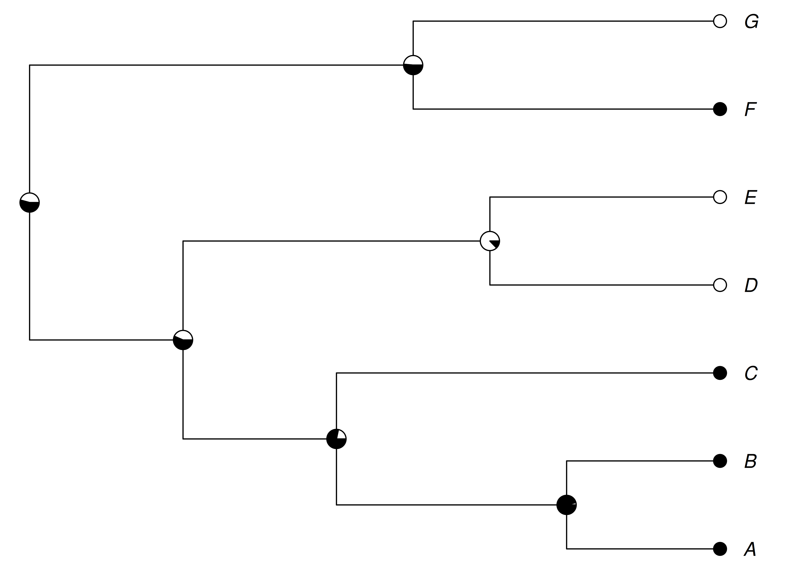
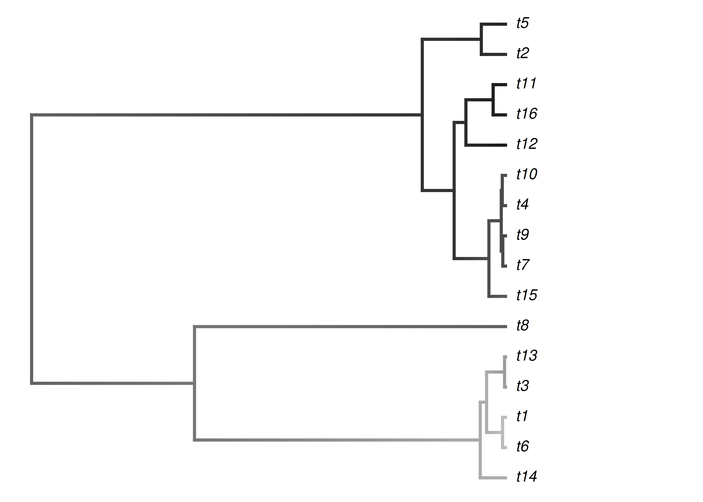

Chapter 11 Ancestral character state reconstruction
We learned about models of evolution and how to run these models forward in time, from the root to the tips, to simulate the evolution of characters. In the chapters on inference, we used the same machinery to estimate the tree and model parameters that best explain the states we see at the tips. Here we turn to a different product of the same tools—learning about the states of the characters at the internal nodes of the tree. Estimating these states is called ancestral character state reconstruction (Joy et al. 2016; Revell 2025).
Recall the framing from Chapter 1. A phylogenetic analysis has several components—the tree, the branch lengths, the model, the model parameters, the character states at the tips, and the character states at the ancestors. Different studies clamp some of these, estimate others, and then keep or discard the estimates depending on the question. Ancestral character state reconstruction is the case where the character states at the internal nodes are what we want to estimate and keep. To get them, we usually clamp the tree, the branch lengths, and the observed states at the tips, and then estimate the states at the ancestors.
There are many applications of ancestral character state reconstruction, and learning about long-dead ancestors has been a central goal of evolutionary biology (Pagel 1999). These methods can seem like a time machine—they can give us a glimpse into the past, indicating the color of a flower, the presence of a limb, or the body size of an organism that lived tens of millions of years ago and left no direct record. It is one of the most evocative things we can do with a phylogeny, and also one of the easiest to misuse. A reconstruction is not an observation but an estimate, only as good as the model and data behind it, and we take up the cautions that come with that at the end of the chapter.
11.1 Reconstructing discrete characters
We already have all of the machinery we need to reconstruct discrete ancestral states under a model of evolution. In the chapters on simulation and inference we described the evolution of a discrete character with a rate matrix \(\mathbf{Q}\), and we saw that the probability of moving from one state to another along a branch of length \(t\) is given by the matrix exponential \(\mathbf{P}(t) = e^{\mathbf{Q}t}\) (Equation (3.7)). The same model that let us simulate data and compute the likelihood of a tree also lets us compute the probability of each state at each internal node.
The simplest Markovian model for a discrete character with \(k\) states is the Mk model (Lewis 2001), a direct generalization of the Jukes-Cantor model to \(k\) states in which all changes occur at the same rate. Just as with DNA models, we can relax this assumption to allow different rates for different transitions.
There are two distinct questions we might ask about the ancestral states, and it is important to keep them separate. The first is the marginal reconstruction—for a single node, what is the probability of each possible state, averaging over all possible states at every other internal node? The second is the joint reconstruction—what is the single most probable assignment of states to all internal nodes considered together? The marginal reconstruction is the more commonly reported, because it gives us a probability for each state at each node, and therefore an explicit measure of uncertainty. It is the one we focus on here.
To see how these probabilities are actually computed, recall how we found the likelihood of a tree in the chapter on inference. We listed every possible combination of states at the internal nodes—every possible history that could connect the observed tips—and computed the probability of each one as the product of the per-branch transition probabilities from \(\mathbf{P}(t) = e^{\mathbf{Q}t}\) (Equation (4.1)) together with the frequency of the state at the root. Summing over all of those histories gave the likelihood of the observed tip states.
Marginal reconstruction reuses exactly that calculation. To find the probability that one particular internal node is in a given state, we add up the probabilities of just those histories in which that node holds that state, and divide by the sum over all histories. Repeating this for each possible state gives the set of probabilities we draw as the pie at that node. Because every history threads from the root, through the node, and out to the tips, this ratio automatically folds in the states of the descendants below the node, the states elsewhere in the tree, and the branch lengths on every side. That is why a node flanked by short branches leading to tips that agree is reconstructed sharply, while one reached only across long branches is pulled toward an uninformative, near-even split.
Listing every history is only feasible on very small trees. In practice the same sums are obtained efficiently by a two-pass traversal of the tree—a downpass that gathers information from each node’s descendants and an uppass that gathers it from the rest of the tree—but the quantity being computed is precisely the ratio just described. The joint reconstruction asks a different question of the same histories: rather than summing, it picks out the single assignment of states to all internal nodes at once that has the highest probability.

Figure 11.1: Marginal ancestral state reconstruction of a binary character under an equal-rates Mk model. Tips are scored as present (black) or absent (white). Each pie at an internal node shows the estimated probability of each state at that node. Nodes near well-sampled clusters of tips are reconstructed with high confidence, while deeper nodes are more uncertain.
Figure 11.1 shows a reconstruction of this kind for a small binary character. Note that the reconstruction is not a set of hard assignments but a set of probabilities, drawn here as pie charts at each node. Nodes that sit just above a cluster of tips that agree with each other are reconstructed with high confidence. Deeper nodes, where the descendant tips disagree and long branches allow ample opportunity for change, are reconstructed with much more uncertainty. Those uncertain pies are a feature, not a nuisance. They are the model honestly telling us that the data do not strongly favor one state over another.
The reconstruction depends on the model. If we had allowed the rate of gains to differ from the rate of losses, or fit a model in which one state is much harder to leave than another, the reconstructed probabilities at the internal nodes could shift substantially. This is why model selection, discussed in the chapter on evaluating models, matters as much here as it does in phylogenetic inference.
11.2 Reconstructing continuous characters
For continuous characters we reconstruct ancestral states under a continuous model of evolution, most often the Brownian motion model introduced in Section 9.2. Recall that under Brownian motion the expected change along a branch is zero, and the variance of the change grows in proportion to the branch length. The observed trait values at the tips of the tree follow a multivariate normal distribution whose covariance structure is set by the shared branch lengths of the tree.
Under Brownian motion the estimate of the trait value at an internal node has a satisfying intuition. It is a weighted average of the values in the two subtrees descending from the node, where the weights are inversely proportional to the branch lengths (including the variance accumulated deeper in each subtree). A descendant reached by a short branch is a more reliable guide to the ancestor than one reached by a long branch, and so it counts for more in the average. The reconstructed value at the root is a weighted average of the entire tree.
Concretely, the estimate is built up from the tips toward the root by the same kind of pruning we used for the discrete case. Summarize each tip by its observed value and a variance equal to its branch length (in units of the rate \(\sigma^2\)). At an internal node joining two descendants that carry estimates \(\hat{x}_i\) and \(\hat{x}_j\) with variances \(v_i\) and \(v_j\), combine them by inverse-variance weighting,
\[\begin{equation} \hat{x} = \frac{\hat{x}_i / v_i + \hat{x}_j / v_j}{1 / v_i + 1 / v_j}, \tag{11.1} \end{equation}\]
so that the descendant reached by the shorter, lower-variance branch pulls the estimate more strongly toward itself. The combined estimate carries its own variance, \(1 / (1/v_i + 1/v_j)\), to which we add the node’s branch length before passing it further toward the root. Sweeping all the way to the root yields its maximum likelihood estimate together with the variance that becomes its confidence interval. The estimate at any other internal node follows from the same rule applied on both sides of the node—equivalently, from re-rooting the tree at that node and reading off the new root estimate—so it reflects the descendants below and the rest of the tree above in the same inverse-variance way.

Figure 11.2: Maximum likelihood reconstruction of a continuous character evolving under Brownian motion. A grayscale gradient (light = low, dark = high) maps trait values along the branches, interpolating between the estimated ancestral values at the nodes and the observed values at the tips. The reconstruction is a smooth, branch-length-weighted interpolation, and estimates at deep nodes are pulled toward the overall mean of the tree.
Figure 11.2 shows a continuous reconstruction, with the estimated trait value mapped as a grayscale gradient along the branches of the tree. Because the reconstruction at each node is an average of its descendants, the reconstructed values are smoother and less extreme than the tip values. Deep nodes in particular are pulled toward the middle of the observed range. This is a direct consequence of the model. Brownian motion has no memory of direction and no tendency toward any particular value, so in the absence of information the best guess for an ancestor is the average of its descendants.
Just as with discrete characters, we can quantify the uncertainty in these estimates, and the same pruning that produces each estimate also produces its variance. That variance—the \(1 / (1/v_i + 1/v_j)\) term we tracked up the tree in Equation (11.1)—is small when a node is pinned down by short branches to informative tips and large when the node is reachable only across long branches. Multiplying it by the estimated diffusion rate \(\sigma^2\) gives the variance of the estimate itself, and because trait values are normally distributed under Brownian motion, an approximate 95% confidence interval is the estimate plus or minus about two standard errors (twice the square root of that variance). Interval width therefore grows for nodes that are deeper in the tree and further from the observed tips, whose estimates pool information across longer, higher-variance paths. The reconstruction at the root is often accompanied by a strikingly wide interval, which again is the model being honest—a single trait diffusing randomly for a long time tells us very little about where it started.
11.3 Cautions and limitations
Reconstructions are only as good as the model (Cunningham et al. 1998). Every reconstructed state is conditional on the model of evolution we assumed, the tree we clamped, and the branch lengths we used. Change the model and the reconstruction can change, and reconstructions can be strikingly sensitive to this—a badly misspecified model can yield confident but wrong ancestral states (Revell 2025). A reconstruction is best understood as a statement of the form “if the character evolved like this, on this tree, then the ancestor probably looked like this.”
Uncertainty grows with depth. Both the discrete pies and the continuous confidence intervals tend to become less informative as we move away from the tips and toward the root. Deep ancestral states, which are often the ones we most want to know, are frequently the ones we can say the least about.
Time-reversible models cannot detect directional trends. Many standard models, including Brownian motion and the reversible substitution models, are symmetric with respect to the direction of change. If a trait actually evolved with a consistent directional bias—say, a lineage-wide trend toward larger body size—a reversible model applied only to the surviving tips can be systematically misled about ancestral values (Schluter et al. 1997). Fossil data, when available, can constrain reconstructions in ways that living tips alone cannot.